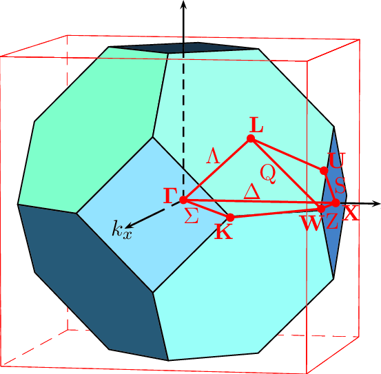

نظریه تابعی چگالی
مفاهیم و تعاریف
presented by
In solid state physics, the first Brillouin zone is a uniquely defined primitive cell in reciprocal space
Unit cell and basis
cif, xsf, poscar, cube files, export png
pwi, wien2k, xsf, and data (charge, potential, ...)
read and write siesta fdf format and ....
edit, make and convert between common formats
https://yavar-azar.github.io/SIESTA-Tutorial/crystal/crystal.html